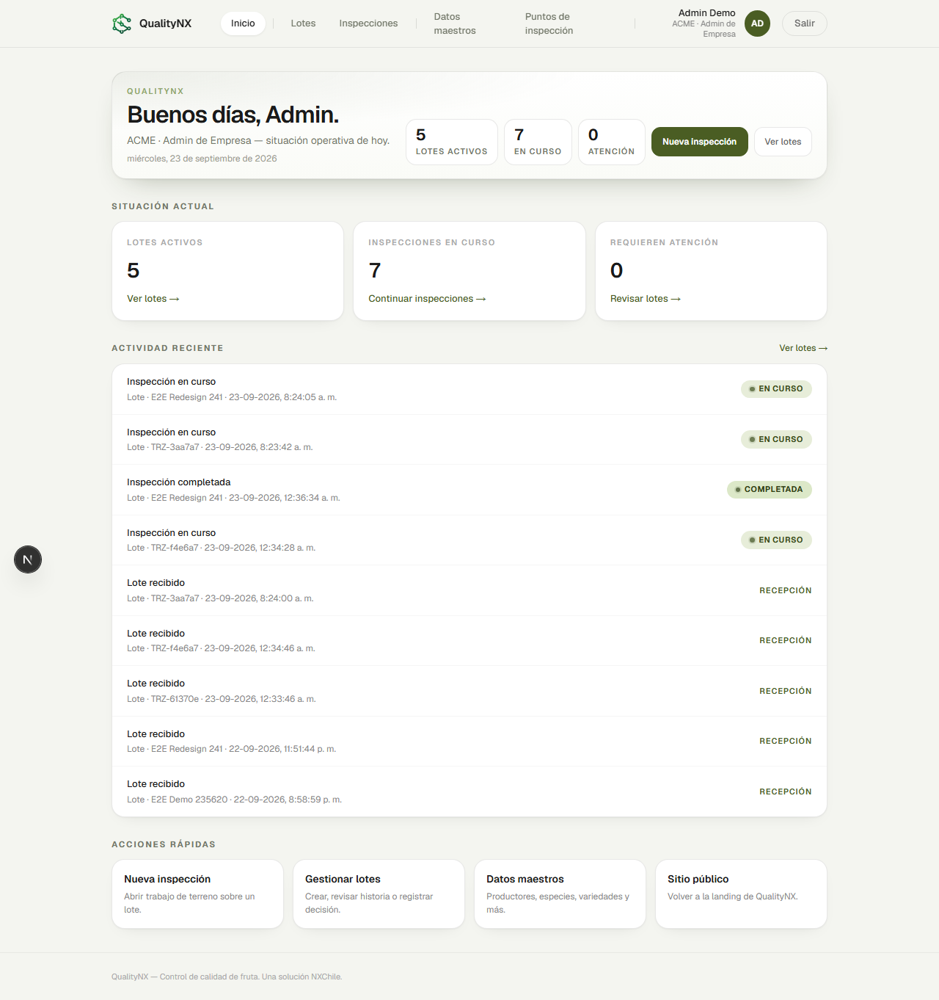
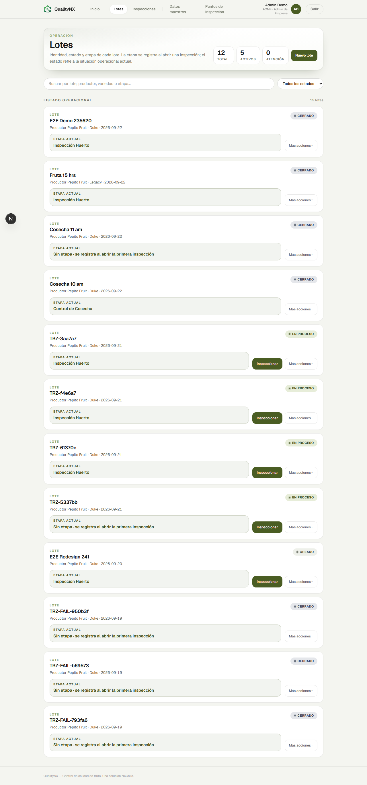
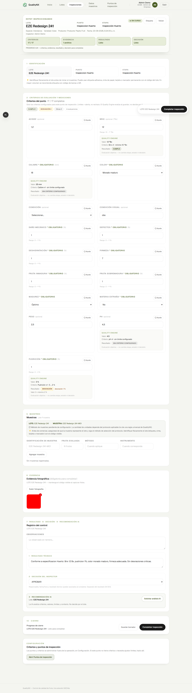
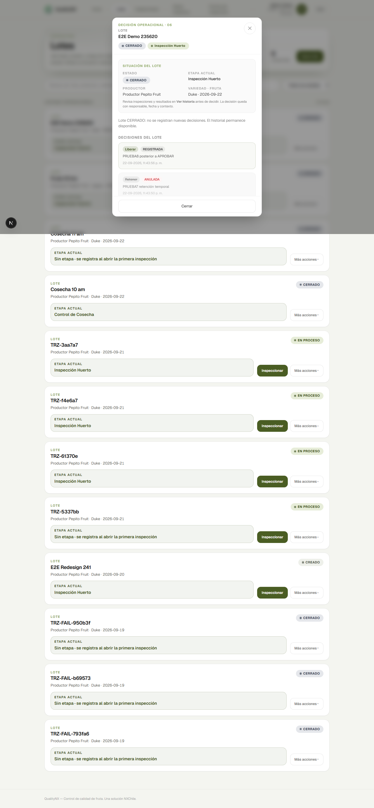
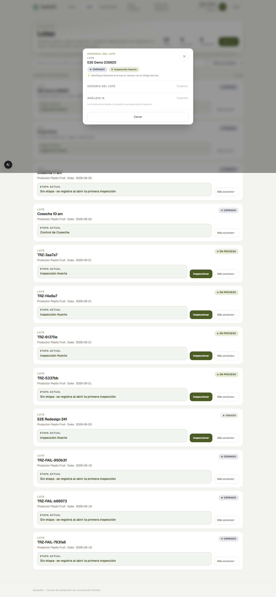

Para fruta fresca y operación en terreno.
Del lote a la trazabilidad.

Operación real
En la operación conviven lote, inspección, medición, decisión e historia. El desafío es volver sobre lo ocurrido.
Sin relación forzada entre capas, el estado actual no explica cómo se llegó a él.
Plataforma integrada
Arquitectura real
Empresa, especie, etapa, punto y criterio no se mezclan. El flujo de verdad es una cadena, no un formulario único.
Unidad operacional
Identificación por bloque de cosecha.
Estado informativo, sin selector arbitrario.
Desde aquí comienza la historia.

Captura real · Lotes
Captura real · Detalle de inspecciónFlujo real
Continuidad
Una inspección no termina necesariamente la historia.
Una nueva inspección puede continuar la anterior.
Evaluación determinística · D-023
Resultados posibles
Snapshot del criterio al momento de evaluar.
No altera etapa, estado ni decisión.
E2E etapa 05 · 23/23 PASS
El sistema entrega respaldo técnico.
La decisión permanece humana.
decision_effects
permanece vacío por diseño (D-024). No se inventan transiciones automáticas.

Captura real · Decisión del loteDiferencial
Qué ocurrió · cuándo · quién · estado anterior y nuevo · secuencia reconstruible.

Captura real · Historia del loteMemoria operacional protegida
Evidencia técnica · BUILD_STATUS
Por capas
Web sobre APIs y lógica de dominio, con Supabase como base. Solo componentes realmente implementados.
Next.js · Cloudflare Workers · OpenNext
Supabase Auth · RLS · Storage de evidencia
OpenRouter FREE · asistente server-side (no decide)
BUILD_STATUS
La evolución continúa sobre ella. No presentamos 08–11 como terminadas.
decision_effects
permanece vacía por decisión arquitectónica (D-024).
Implementado vs siguiente
07 cerrada. El orden oficial continúa con 08–11 según BUILD_ORDER.
En operación: lotes, inspecciones, evaluación, decisiones e historia del lote.
Pendiente de decisión: matriz PUNTO + DECISIÓN → ETAPA/ESTADO.
No se adelanta: genealogía, offline, view operacional ni analítica.
Del lote a la trazabilidad.
NX Quality · NXChile
Demo local · secuencia recomendada
Secuencia operativa sobre el lote de referencia E2E Redesign 241
(d8ba1f69-4724-4307-a726-de7c279f80ce).
Base: http://localhost:3000
http://localhost:3000